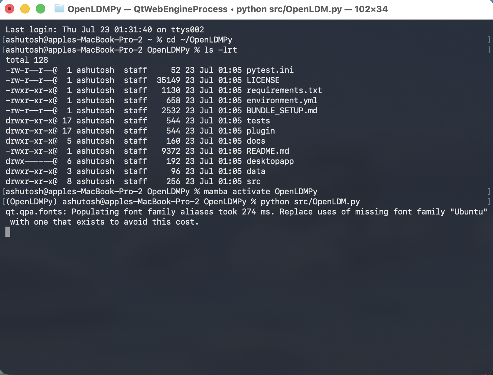

After completing all the requirement given in System Requirements and System Setup sections, activate the environment and, from the repository root, run python src/OpenLDM.py to start the GUI (equivalently, python OpenLDM.py if you're already inside src/). For a headless run instead, use python src/OpenLDM.py --mode nogui --config <scenario.yaml>. If something goes wrong, the session log written to the project directory (<timestamp>-{summary,execute,accuracy}.log) is the first place to look.
A terminal session showing these steps end to end (activating the environment, then launching the GUI) is shown in Figure 1.

Figure 1
(OpenLDM) v1.0 IIRS